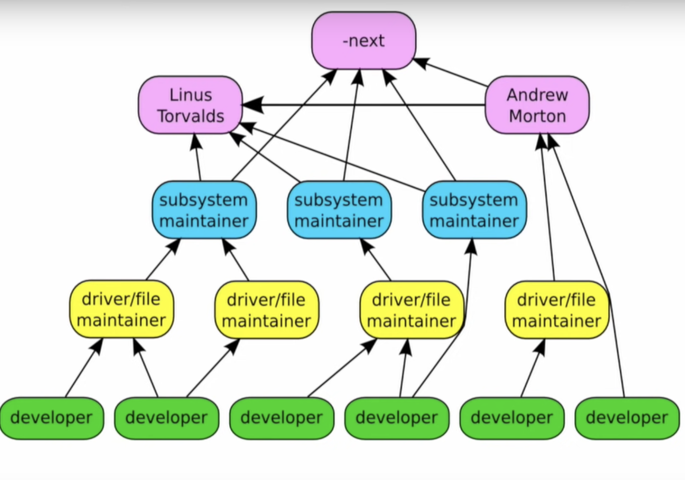

Linux
Table of Contents
1. Greg Kroah Hartman on the Linux Kernel
https://youtu.be/L2SED6sewRw?si=xr2RwLyOMzrMcAjm&t=864
https://youtu.be/vyenmLqJQjs?si=E5E4OAlrDrllb5Y9&t=181

Figure 1: Linux Hierarchy
1.1. Kernel moves really fast
1.2. There is no conventional test
https://youtu.be/L2SED6sewRw?si=xr2RwLyOMzrMcAjm&t=864 There is no test in the traditional/popular sense of test.
Kernel is tested by running it.
Developers test it. Because there are hundreds of permutations of configs and conditions to test.
Zero day test (https://youtu.be/vyenmLqJQjs?si=leZ1mJ60eKRJXkjA&t=1493)
- Intel has 0-day bots that build the public linux kernel trees on different configurations and test a bunch of things